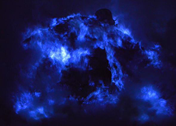

Color 3:
Blue
Feelings/Ideas Blue Conveys
The first image I think of when I think of the cool color blue, I think
of the ocean. Another image that can be imagined when blue is mentioned
is that of a clear, blue sky. Both images represent a calm feeling that
blue is known for. In addition to this feeling of calmness, the shade of
blue also changes what feeling the color conveys. For example, "light
blues can be refreshing and friendly [meanwhile] dark blues are stronger
and more reliable" (Chapman).
How Blue is Used
The use of blue is dependent on the company. For example, banks such as
Chase and Capital One is dark blue or hints of dark blue in their websites.
Hospitals such as Kindred Chicago also use dark blues in their websites
as well by making their font dark blue. This use of blue is expected
because these companies "[cater] to online prescriptions, monetary
transactions, or any other niche that demand reliability" (Baker). These
companies want to seem reliable, so they attract customers to open bank
accounts with them or patients to use their services.
Blue Image

Sources:
1) Chapman, Cameron. "Color Theory for Designers, Part 1: The Meaning of Color." Smashing Magazine, 28 Jan. 2010,
www.smashingmagazine.com/2010/01/color-theory-for-designers-part-1-the-meaning-of-color/.
2) Barker, Shane. "The Psychology of Color in Web Design." Vandelay Design, Vandelay Design, 26 Apr. 2016,
www.vandelaydesign.com/the-psychology-of-color-in-web-design/.
3) http://www.slate.com/content/dam/slate/blogs/lexicon_valley/2015/05/25/why_do_we_associate_the_color_blue_with_swearing/480293689-this-photo-taken-on-march-22-2014-shows-the-blue-flame.jpg.CROP.promo-mediumlarge.jpg